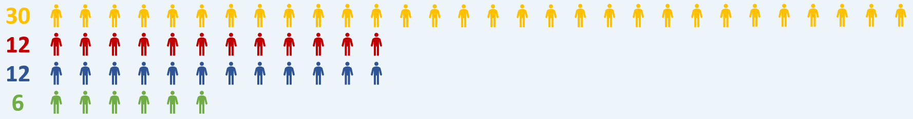
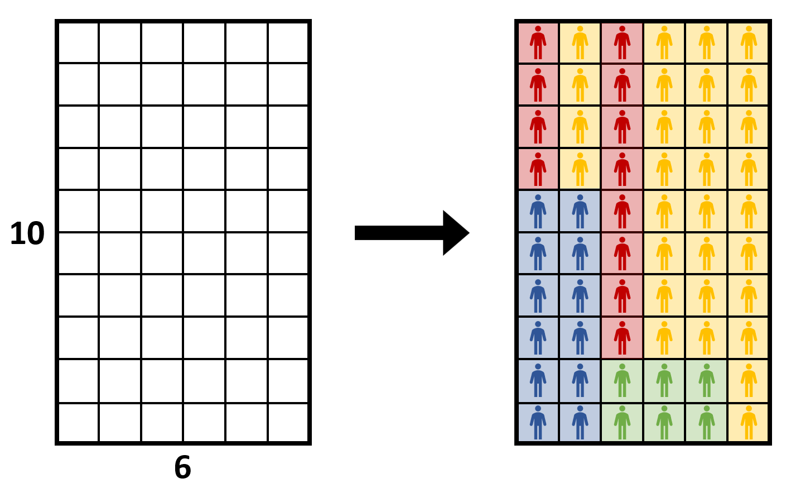
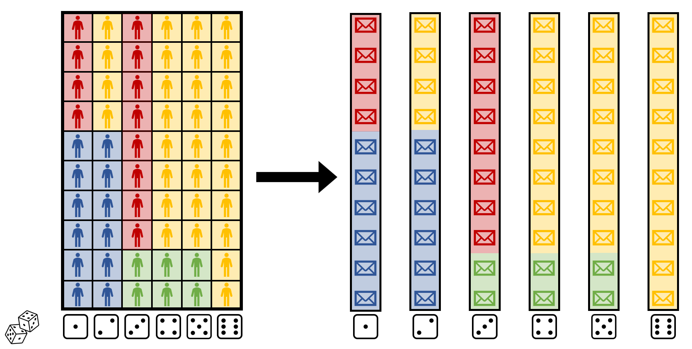
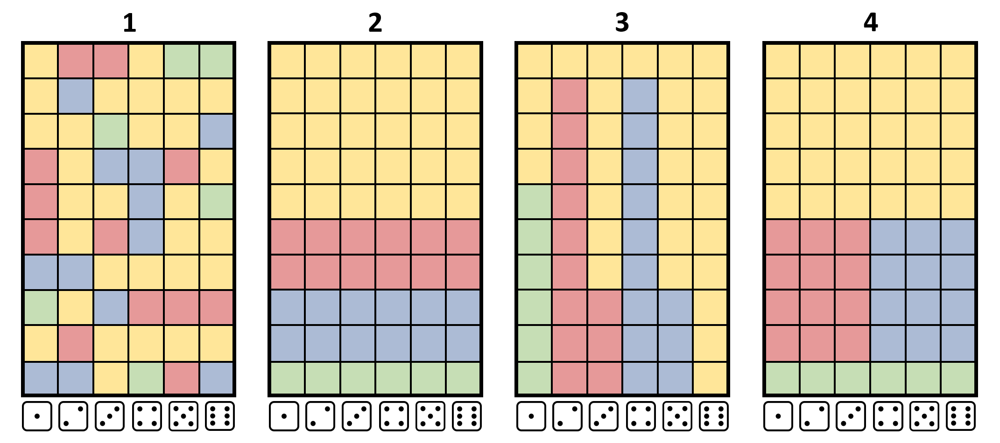
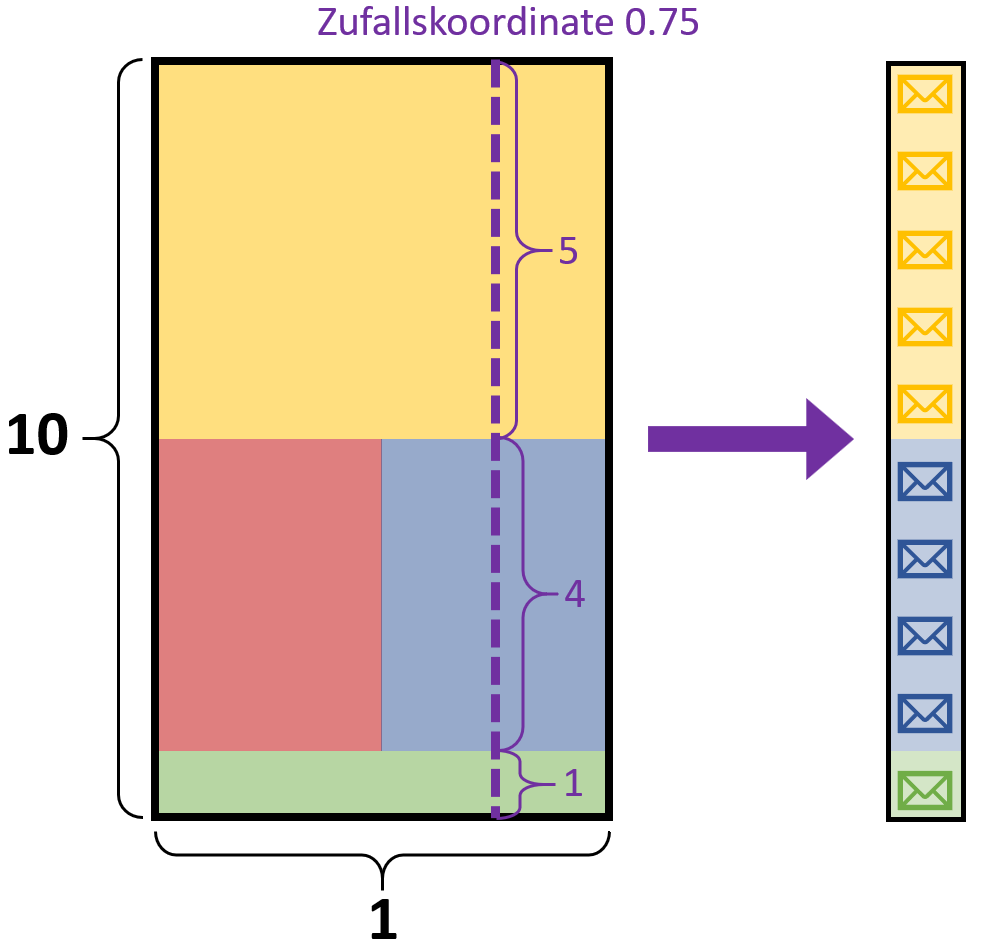
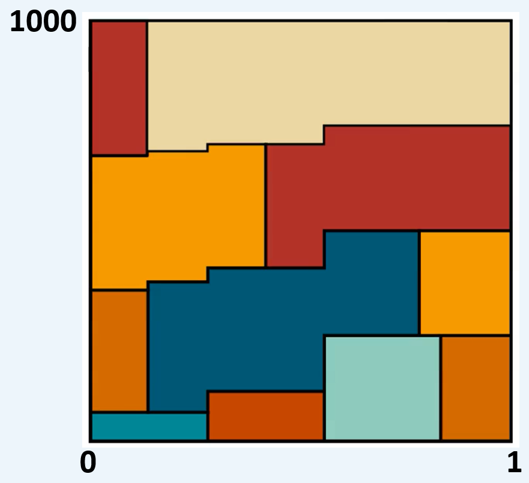
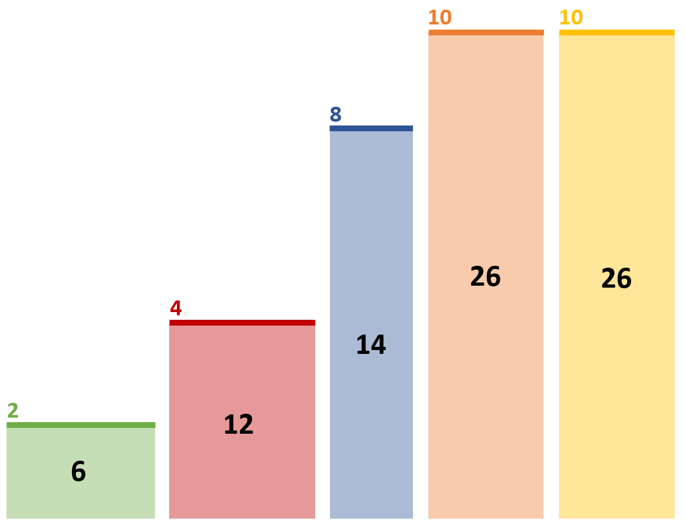
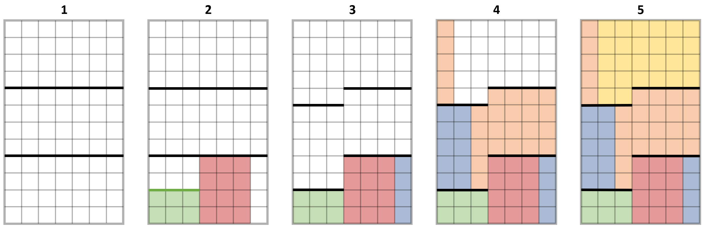

City Sampling – Gemeindelotterie für Bürger*innenräte
Wie werden Einladungsbriefe verschickt, wenn es kein zentrales Melderegister gibt? Wie wird dabei sichergestellt, dass jede Person dieselbe Chance auf eine Einladung hat?
Um einen Bürger*innenrat einzurichten, werden im ersten Schritt Menschen aus dem ganzen Land eingeladen. Dabei soll jede Person genau die gleiche Chance auf einen Einladungsbrief haben. Anschließend wird der Bürger*innenrat aus all den Menschen zusammengestellt, die ihre Einladung angenommen haben — dabei wird darauf geachtet, dass bestimmte Gruppen repräsentiert werden, also dass zum Beispiel Menschen verschiedenen Alters, Bildungsgrads, Genders und Herkunftsorts ausgewählt werden.
Aber wie wird eigentlich entschieden, wer einen Brief erhält? Diesen Schritt schauen wir uns hier genauer an.
Warum ist das nicht ganz einfach?
Auf den ersten Blick scheint das Problem einfach zu sein: Kann man nicht einfach zufällig die gewünschte Anzahl Menschen auswählen, mit gleichen Chancen für alle? Wenn es eine zentrale Liste aller Einwohnenden gäbe, wären wir tatsächlich hier fertig.
In Deutschland gibt es eine solche zentrale Liste aber nicht — stattdessen verwaltet jede Stadt die Daten ihrer Einwohnenden selbst (oder um genau zu sein: jede Kommune). Wir können also nicht direkt zufällig Menschen auswählen. Stattdessen müssen wir zufällig Städte auswählen und jeder Stadt eine gewisse Anzahl Einladungsbriefe zuordnen, die innerhalb der Stadt zufällig verteilt werden.
💡 Warum gibt es kein zentrales Melderegister in Deutschland?+
Gründe dafür sind unter anderem Datenschutz und Schutz vor Missbrauch der Daten durch den Staat. Jede Kommune verwaltet die Daten ihrer Einwohnenden eigenständig. Ein Gesetzesentwurf für ein zentrales Bundesmelderegister 2008 scheiterte unter anderem an datenschutzrechtlichen Bedenken.
💡 Könnte man nicht einfach alle Städte auswählen und ihnen ihren Anteil an Briefen geben?+
Dafür gibt es viel zu viele — zum 1. Januar 2026 gab es 10.747 Gemeinden in Deutschland.
Es wäre ein riesiger Aufwand, mit allen Kontakt aufzunehmen, nur um dann sehr wenige Briefe pro Stadt zu versenden.
Das lohnt sich nicht.
Wenn wir 20.000 Einladungen verschicken, würde z.B. alle Gemeinden mit bis zu 4.100 Einwohnenden nicht mal ein voller Brief zustehen.
Wie sollten Städte also ausgewählt werden? Und wie schaffen wir es, dass jede Person dieselbe Chance auf einen Brief hat?
Bildliche Darstellung
Zunächst schauen wir an, wie man das Problem bildlich darstellen kann. Wir stellen uns ein kleines Land mit insgesamt 60 Einwohnenden vor, die auf vier Städte verteilt sind: Die Hälfte, also 30 Menschen, wohnen in der gelben Stadt, 12 wohnen in der roten Stadt, weitere 12 in der blauen Stadt und 6 in der grünen Stadt.

Wir möchten zu unserem Bürger*innenrat insgesamt 10 Einladungsbriefe verschicken. Dieses Problem kann man gut bildlich darstellen: Wir malen ein Rechteck der Höhe 10 und Breite 6 mit 10 × 6 = 60 Feldern — also genau ein Feld pro Bewohner*in unseres Landes. Jede Person wird in einem Feld platziert, sodass wir 30 gelbe Felder, 12 rote und blaue Felder und 6 grüne Felder erhalten.
Das könnte zum Beispiel so aussehen:

Dann würfeln wir zufällig eine der 6 Spalten aus. Jede Spalte besteht aus 10 Feldern — genau die richtige Anzahl Einladungen, die wir verschicken wollen. Wird zum Beispiel eine 1 gewürfelt, verschicken wir 6 Briefe an die blaue und 4 Briefe an die rote Stadt.
Bei einer 2 verschicken wir 6 Briefe an die blaue und 4 Briefe an die gelbe Stadt und so weiter.

Fairness: Wichtig für die Fairness ist nur, dass jede Stadt genau so viele Felder bekommt wie sie Einwohnende hat.
Oder, in anderen Worten: Der Anteil der gelb gefärbten Fläche am gesamten Rechteck muss dem Bevölkerungsanteil der gelben Stadt an der Gesamtbevölkerung entsprechen, genauso für die anderen Farben.
Solange die Anzahl der Felder bzw. die Fläche fair aufgeteilt ist, hat jede Person sicher dieselbe Auswahlwahrscheinlichkeit.
Form im Bild:
Wenn die Fläche immer gleich ist, kann immernoch die Form variieren.
Es kann sein, dass eine Stadt eine geringe Chance hat, überhaupt ausgewählt zu werden, dafür aber im Falle einer Auswahl viele Einladungen versenden darf. Das erkennt man an einer schmalen und hohen Form im Bild.
Die grüne Stadt dagegen hat eine höhere Chance ausgewählt zu werden, darf dann aber nur wenige Briefe verteilen, was man an einer breiten und flachen Form erkennt.
Sind wir jetzt fertig? Ein Rechteck einzufärben ist schließlich nicht schwer. Aber wir können das Rechteck auf ganz viele Arten färben, mit verschiedenen Vor- und Nachteilen.
Wie färben wir das Rechteck?
Hier sind einige andere Möglichkeiten, das Rechteck einzufärben:

Bild 1 – Chaotisch:
So ein chaotisches Bild wie dieses wird allerdings schnell unübersichtlich.
Bild 2 – Regelmäßige Schichten:
Stattdessen kann man die Farben regelmäßig in Schichten anordnen.
Hier muss gar nicht mehr gewürfelt werden, weil jede Spalte gleich aussieht.
In jedem Falle werden alle vier Städte ausgewählt und erhalten ihren fairen Anteil an Briefen.
Beide Bilder haben aber einen entscheidenden Nachteil:
Es kann passieren, dass alle Städte des Landes gleichzeitig ausgewählt werden und Briefe verschicken müssen.
In Ländern mit vielen Städten ist es nicht umsetzbar, mit allen Kontakt aufzunehmen und sich zu koordinieren.
Wir möchten also pro Spalte nur eine begrenzte Anzahl verschiedener Farben haben.
Bild 3 – Maximal zwei Farben pro Spalte:
Hier liegen immer nur zwei Farben übereinander, es werden also nur zwei Städte gleichzeitig ausgewählt.
Es entstehen allerdings zwei andere Nachteile.
Erstens werden alle Einwohnenden der grünen Stadt eingeladen, falls eine 1 gewürfelt wird.
Tatsächlich hat aber jede Stadt eine maximale Anzahl an Briefen, die sie verschicken darf, die kleiner als die Anzahl Einwohnender ist.
💡 Warum darf eine Stadt nicht alle ihre Adressen herausgeben?+
Es gibt zwei Gründe: Erstens soll Überrepräsentation einer Stadt vermieden werden — wenn alle Einwohnenden einer kleinen Stadt eingeladen werden, ist diese Stadt unverhältnismäßig stark vertreten.
Zweitens ist Datenschutz ein wichtiger Grund: Die Herausgabe aller Adressen einer Stadt auf einmal birgt ein höheres Risiko für Missbrauch.
Deshalb gibt es für jede Stadt eine maximale Anzahl Briefe, die sie verschicken darf.
Nun zum zweiten Nachteil von Bild 3: Es kann vorkommen, dass eine deutlich kleinere Stadt viel mehr Briefe erhält als eine größere.
Wenn nämlich eine 2 oder 4 gewürfelt wird, erhält die gelbe Stadt nur einen einzigen Brief, während die deutlich kleinere rote bzw. blaue Stadt ganze 9 Briefe erhält.
Weil die Briefe so unbalanciert verteilt sind, empfinden Menschen das im Nachhinein oft als ungerecht.
💡 Widerspricht das nicht unserem Fairness-Gedanken?+
Nein, der Auswahlprozess ist trotzdem insgesamt fair, da jede Stadt genau so viele Felder wie Einwohnende hat.
Wenn eine 2 oder 4 gewürfelt wird, erhält die gelbe Stadt zwar nur einen Brief, aber bei einer 3, 5 oder 6 erhält sie viel mehr.
Das gleicht sich insgesamt aus.
Dennoch könnten es Menschen im Nachhinein als unfair empfinden, wenn die Briefe so unbalanciert verteilt werden.
Es geht hier also eher um das Gerechtigkeitsempfinden.
Bild 4 – Der beste Kompromiss:
Vielleicht der beste Kompromiss aus den genannten Vor- und Nachteilen ist hier abgebildet.
Es werden immerhin nie mehr als drei verschiedene Städte ausgewählt, keine Stadt muss jemals die Adressen aller Einwohnenden herausgeben, und kleinere Städte erhalten immer weniger Briefe als große Städte.
In Beispielen mit mehr Städten wird es sehr wichtig, Lösungen zu finden, bei denen nicht alle Städte kontaktiert werden müssen.
Kriterien für das Einfärben
Die entscheidende Frage ist also: Nach welchen Regeln und auf welche Weise soll das Rechteck eingefärbt werden?
Die folgenden Kriterien sollten beachtet werden:
1
Fairness
Jede Person hat die gleiche Chance, einen Einladungsbrief zu erhalten.
Bildliche Bedeutung: Der Flächenanteil jeder Farbe bzw. Stadt entspricht ihrem Bevölkerungsanteil.
2
Gerechtigkeitsempfinden
Kleinere Städte erhalten nie mehr Briefe als größere Städte.
Bildliche Bedeutung: Wenn zwei Städte übereinander sind, ist die größere immer mindestens so hoch wie die kleinere.
3
Einladungsgrenze
Die maximal erlaubte Anzahl Einladungen jeder Stadt wird eingehalten.
Bildliche Bedeutung: Jede Farbe hat eine maximal erlaubte Höhe.
4
Umsetzbarkeit
Es sollen möglichst wenig verschiedene Städte gleichzeitig ausgewählt werden.
Bildliche Bedeutung: Es sollen möglichst wenige Städte übereinander liegen.
Von Spalten zu kontinuierlichen Bildern
In der Praxis sind die Länder natürlich viel größer und es gibt viel mehr Städte. Dann stellen wir die Bilder der Anschaulichkeit halber nicht mehr mit einzelnen Feldern und Spalten dar.
Man kann sich vorstellen, dass die Felder dann so klein werden, dass sie den Pixeln im Bild entsprechen.
Die Höhe des Rechtecks ist weiterhin die Anzahl der zu verschickenden Briefe und die Breite der Einfachheit halber 1.
Anstatt zufällig eine Spalte auszuwählen, wählen wir nun eine zufällige x-Koordinate zwischen 0 und 1.
An dieser Stelle ziehen wir eine Linie nach oben und schauen, welche Farben jeweils mit welcher Höhe vorkommen.
Die Höhe jeder Farbe entscheidet dann, wie viele Briefe diese Stadt bekommt.
Bild 4 aus unserem Beispiel sähe dann so aus, wenn zufällig die Koordinate 0,75 ausgewählt wird:

In der Praxis könnten Bilder dann zum Beispiel so aussehen:

Teil 2
Greedy Equal
Wie genau färben wir das Rechteck und erfüllen dabei die gewünschten Kriterien? Unsere Methode namens Greedy Equal bekommt von uns eine Liste der Städte, ihrer Einwohnendenzahlen und maximal erlaubter Höhen;
außerdem die Anzahl der insgesamt zu verschickenden Briefe und eine Grenze, wie viele Städte maximal übereinander liegen dürfen.
Unter diesen Vorgaben versucht Greedy Equal dann, das Bild zu färben.
Das Bild wird in Schichten von unten nach oben und von links nach rechts aufgefüllt, wobei die Städte nach Größe sortiert verarbeitet werden.
Bevor wir die Methode im Detail anschauen, hier schonmal ein Beispiel:
💡 Wie wählen wir die maximale Anzahl Städte?+
Man kann nicht einfach jede beliebige Grenze verlangen.
Würden wir zum Beispiel vorgeben, dass nie mehr als eine Stadt angeschrieben werden darf, aber eine Stadt nicht alle Briefe verschicken darf, wäre das Problem unlösbar.
Eine gewisse Anzahl Städte übereinander muss erlaubt sein, damit es überhaupt möglich ist, alle Kriterien zu erfüllen.
Wie groß diese Anzahl ist, hängt immer von der spezifischen Situation ab. Wir kennen sie nicht, sondern starten einfach bei 1 und erhöhen die Vorgabe so lange, bis Greedy Equal eine Lösung gefunden hat.
Spätestens, wenn wir alle Städte übereinander erlauben, gibt es schließlich immer eine Lösung.
Man kann beweisen, dass Greedy Equal schon dann eine Lösung findet, wenn man ihm 2 Städte mehr als die theoretisch notwendige Mindestanzahl erlaubt.
Das bedeutet, es müssen höchstens 2 Städte mehr als nötig kontaktiert werden.
Ein Beispiel Schritt für Schritt
Das Land hat 84 Einwohnende und 5 Städte: Die grüne Stadt hat 6, die rote 12, die blaue 14 und die orange und gelbe jeweils 26 Einwohnende. Die Städte können folgende Anzahlen Briefe maximal versenden: 2 (grün), 4 (rot), 8 (blau), 10 (orange), 10 (gelb). Wir wollen insgesamt 12 Einladungsbriefe verschicken und erlauben maximal 3 Städte gleichzeitig.

Das Rechteck hat Höhe 12. Damit wieder ein Feld pro Einwohner*in entsteht, setzen wir die Breite auf 7 und müssen dann 6 Felder grün, 12 Felder rot, 14 Felder blau und jeweils 26 Felder orange und gelb färben.

Schritt 1Das Rechteck wird in drei gleich große horizontale Schichten der Höhe 4 eingeteilt — so viele Schichten, wie Städte gleichzeitig erlaubt sind.
Schritt 2Wir starten mit der kleinsten Stadt, der grünen. Ihre Maximalhöhe ist 2 — sie kann die Schichthöhe von 4 nicht voll ausnutzen. Sie wird unten links platziert. Die rote Stadt (Maximalhöhe 4) wird mit der vollen Schichthöhe daneben platziert.
Schritt 3Die blaue Stadt kommt als nächstes. Sie darf ihre Maximalhöhe von 8 nicht voll ausnutzen, weil die erste Schicht nur Höhe 4 hat. Beim Platzieren erreichen wir den rechten Rand des Rechtecks.
Schritt 4Der restliche Anteil der blauen Stadt kommt in die zweite Schicht.
Vorher müssen die Grenzen der Schichten im linken Bereich neu gesetzt werden, da die grüne Stadt Platz gelassen hat.
Dieser wird gleichmäßig auf die darüberliegenden Schichten aufgeteilt, sodass die zweite und dritte Schicht links etwas mehr Höhe als rechts bekommen.
Schritt 5Die orange und gelbe Stadt (gleich groß) füllen die restlichen Felder der zweiten und dritten Schicht.
elche der beiden gleich großen Städte wir zuerst betrachten, können wir uns aussuchen und wählen hier orange zuerst.
Am Ende ist das Rechteck vollständig und fair eingefärbt.
Jede Stadt hat genau so viele Felder wie Einwohnende.
Greedy Equal bildet also so viele Schichten, wie Städte übereinander erlaubt sind, und platziert die Städte von klein nach groß in den Schichten. So versucht die Methode, allen ungefähr die gleiche Höhe zu geben. Nur wenn eine Stadt die Höhe aufgrund ihrer Maximalhöhe nicht ausfüllen kann, wird der frei gewordene Platz gleichmäßig unter den höheren Schichten aufgeteilt. Dank der Schichten wird sichergestellt, dass die größeren Städte, die später dran sind, mindestens genauso hoch sind wie die früheren, kleineren Städte.
Das Ergebnis: Greedy Equal garantiert alle drei ersten Kriterien:
Jede Stadt erhält genau die Fläche, die ihr zusteht (Fairness),
kleinere Städte bekommen nie mehr Briefe als größere (Gerechtigkeitsempfinden),
und die Maximalhöhe jeder Stadt wird immer eingehalten (Einladungsgrenze).
Das vierte Kriterium — möglichst wenige Städte gleichzeitig — wird fast perfekt erfüllt, mit höchstens 2 Städten mehr als theoretisch nötig.
Greedy Equal funktioniert außerdem schnell und zuverlässig auf einem normalen Computer.
💡 Warum wird die Maximalhöhe immer eingehalten?+
Weil beim Platzieren einer Stadt immer überprüft wird, ob die Höhe der Schicht zu hoch für die Stadt ist und sie sonst Platz nach oben lässt.
Bei sehr großen Städten kann es theoretisch vorkommen, dass sich eine Stadt "selbst überholt", also über sich selbst geschichtet wird und die Maximalhöhe deshalb vielleicht verletzt wird.
In der Praxis passiert das einerseits kaum und würde andererseits auch kein Problem darstellen, da die erlaubten Höhen bei großen Städten deutlich größer als die Höhe des Rechtecks sind.
💡 Woran erkennt man, wenn Greedy Equal keine Lösung findet?+
Schauen wir uns dasselbe Beispiel an, aber mit maximal zwei Städten übereinander. Greedy Equal arbeitet also nur mit zwei Schichten. Die erste Schicht kann von der grünen Stadt wieder nicht ausgefüllt werden, sodass der übrige Platz an die zweite Schicht gegeben wird. Die zweite Schicht beginnt dann mit der blauen Stadt — allerdings hat diese eine Maximalhöhe von 8, die Schicht hat aber Höhe 10. Es bleibt also oben links eine Lücke im Bild. Das führt dazu, dass am Ende nicht mehr genügend Felder für die gelbe Stadt übrig sind. Daran erkennt man, dass Greedy Equal gescheitert ist — man muss dann eine Schicht mehr erlauben.
💡 Warum ist dieses Problem eigentlich schwierig?+
Wenn man alle vier Kriterien gleichzeitig erfüllen möchte, tauchen Zielkonflikte auf und man muss einen möglichst guten Kompromiss finden. Das zugrundeliegende Problem — die minimale Anzahl kontaktierter Städte zu finden — gehört sogar zu einer Klasse von Problemen, die sich höchstwahrscheinlich nicht perfekt und effizient lösen lassen. Greedy Equal ist deshalb ein kluger Kompromiss: Es ist effizient, verständlich und liefert in der Praxis sehr gute Ergebnisse — mit der Garantie, höchstens 2 Städte mehr als theoretisch nötig zu kontaktieren.